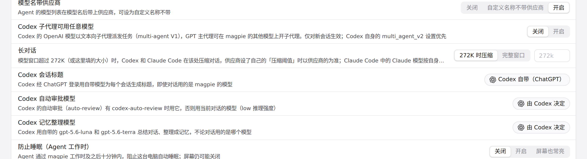
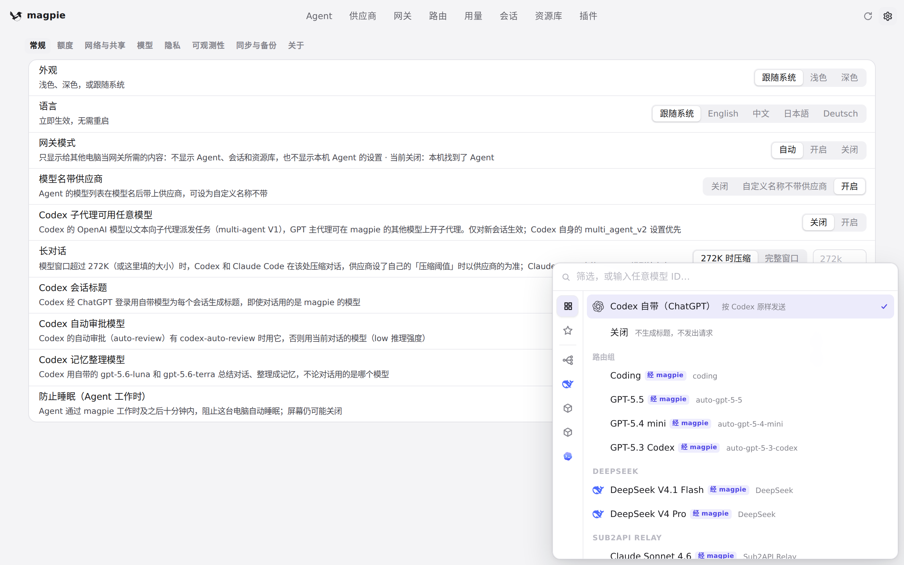

#1073 界面预览
commit 0e38cc4 · 回到 PR · 这个 PR 只改了服务端校验：设置里 Codex 会话标题、图像识别、图像生成三个模型选择在保存时，改为按各自选择器实际列出的模型（provider.Served / gateway.Drawers）来检查，选到已不再提供的模型会返回 400 并保留原值。界面上没有新增控件或页面，变化在于可保存的模型范围与拒绝保存的行为。
红线是鼠标走过的轨迹，红色圆环是一次点击；底部文字是这一步在做什么。空格暂停，← → 逐段查看。

Codex 会话标题的模型选择 · 设置「常规」中的 Codex 会话标题一行与它当前的选择

Codex 会话标题的模型选择 · 点开后列出的可选模型
 模型标签页里的图像模型选择 · 设置「模型」标签页
模型标签页里的图像模型选择 · 设置「模型」标签页
 模型标签页里的图像模型选择 · 「模型」标签页向下滚动后的内容
模型标签页里的图像模型选择 · 「模型」标签页向下滚动后的内容